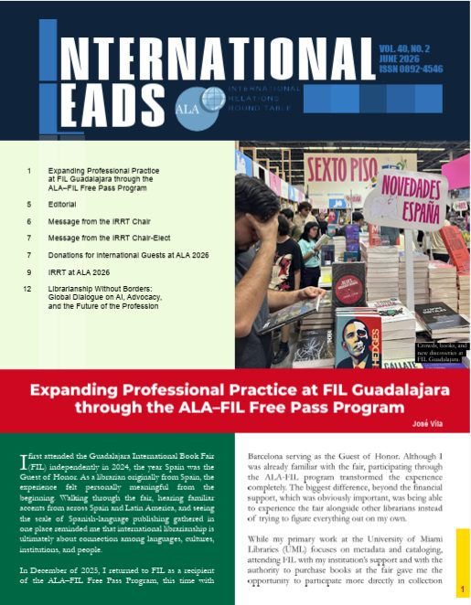

Me alegra compartir la publicación de mi artículo “Expanding Professional Practice at FIL Guadalajara through the ALA–FIL Free Pass Program” en el número de junio de 2026 de International Leads, la publicación de la International Relations Round Table (IRRT) de la American Library Association.

En el artículo reflexiono sobre mi experiencia participando en la Feria Internacional del Libro de Guadalajara a través del programa ALA–FIL Free Pass y sobre cómo esta experiencia me permitió ampliar mi práctica profesional más allá de la catalogación y los metadatos, especialmente en las áreas de desarrollo de colecciones, adquisiciones y biblioteconomía internacional.
Me hace especial ilusión poder compartir esta experiencia con la comunidad bibliotecaria internacional a través de International Leads.
← Volver a Professional Activity